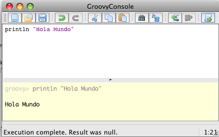
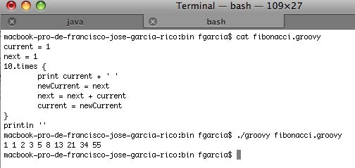

Introducción a Groovy
En esta primera sesión del curso, empezaremos explicando qué es el lenguaje de programación Groovy y, cómo, dónde y porqué se creo para ponernos un poco en situación. Posteriormente, pasaremos a implementar nuestro primer ejemplo en Groovy, el típico Hola Mundo y lo compararemos con lo que sería el mismo ejemplo en Java.
En tercer lugar, describiremos detalladamente algunos aspectos básicos de Groovy, tales como la sintaxis, las aserciones, el trabajo con cadenas de texto, los closures y las estructuras de control, entre otros. Terminaremos explicando como se maneja Groovy en el entorno Java.
¿Qué es?
Mientras James Strachan esperaba junto a su mujer para embarcar en su vuelo de vuelta casa, ella decidió dar un paseo y realizar las últimas compras. Mientras tanto, James visito un cibercafé del aeropuerto con la intención de aprender algo sobre Python. James era un experto programador Java, y enseguida se dio cuenta de que Python tenía algunas interesantes características que podrían ser muy atractivas para los desarrolladores Java. Entre estas características destacaban el soporte nativo para tipos de datos comunes mediante una sintaxis muy intuitiva, y lo que era más importante, el comportamiento dinámico de los mismos.
Groovy nació con la intención de ser un lenguaje rico en características, así como para desenvolverse bien en el entorno Java, para de esta forma, utilizar los beneficios de los lenguajes dinámicos en una plataforma tan robusta como es Java y todo su entorno. Posiblemente, hay muchos lenguajes que tienen más características típicas de los lenguajes dinámicos que Groovy y se integran mejor en la Plataforma Java, pero ninguno de esos lenguajes, presenta una combinación de estos detalles (lenguaje dinámico y entorno Java) tan eficiente como Groovy. Pero, ¿cómo podríamos definir exactamente Groovy?
Una buena definición de Groovy podría ser la que se nos proporciona desde la propia página web de Groovy (http://groovy.codehaus.org):
En ocasiones se tacha a Groovy de ser un lenguaje meramente de script, pero esto es un error, a pesar de que Groovy funciona realmente bien como lenguaje script. Groovy puede ser precompilado a Java bytecode, estar integrado en aplicaciones Java, construir robustas aplicaciones web, añadir un punto de control adicional a nuestros archivos e incluso ser la base de una aplicación completa por si solo.
Se puede afirmar rotundamente que Groovy está destinado a ser utilizado en la Plataforma Java, no en vano muchas partes de Groovy están desarrolladas en Java, así que si decimos que al programar en Groovy, estamos realmente programando en Java, no estamos diciendo ninguna barbaridad. Todas las características de Java están esperando a ser utilizadas en Groovy, incluido todo el conjunto de librerías de Java.
Integración con Java
Cuando hablamos de integración con Java, nos referimos a dos aspectos. Por un lado, de integración imperceptible, puesto que Groovy es simplemente una nueva forma de crear nuestras habituales clases Java. Al fin y al cabo, Groovy es Java con un archivo jar como dependencia. Por otro lado, la sintaxis de Groovy es más precisa y compacta que en Java y a pesar de eso, cualquier programador Java puede entender el funcionamiento de un fragmento de código escrito en Groovy.
¿A quién va dirigido Groovy?
-
A los programadores Java.
Un programador Java con muchos años de experiencia conocerá todas las partes importantes del entorno Java y su API, así como otros paquetes adicionales. Sin embargo, algo aparentemente tan sencillo como listar todos los archivos recursivamente que cuelgan de un directorio se hace pesado en Java y suponiendo que existiera la función eachFileRecurse() tendríamos algo similar a:
public class ListFiles { public static void main(String[] args){ new java.io.File(".").eachFileRecurse( new FileListener() { public void onFile (File file) { System.out.println(file.toString()); } } ); } }Mientras que con Groovy quedaría en una sola línea:
groovy -e "new File('.').eachFileRecurse { println it}" -
A los programadores de scripts
Groovy también va dirigido a aquellos programadores que han pasado muchos años trabajando con lenguajes de programación como Perl, Ruby, Python o PHP. En ocasiones, sobre todo en las grandes empresas, los clientes requieren obligatoriamente el uso de una Plataforma robusta como puede ser Java. Estos programadores deben reciclarse, ya que no es factible cualquier solución que pase por utilizar un lenguaje script como los mencionados anteriormente.
Continuamente este tipo de programadores afirman que se sienten frustrados por toda la ceremonia que conlleva un lenguaje como Java y la frase "si pudiera utilizar un lenguaje como Ruby, podría escribir todo este método en una sola línea" es su pan de cada día. Groovy puede darles un respiro y una vía de escape a este tipo de programadores.
-
A los programadores ágiles y extremos
Este tipo de programadores están acostumbrados a trabajar con la próxima revisión tan cercana, que pararse a pensar en utilizar un nuevo lenguaje de programación queda fuera de sus principales objetivos. Sin embargo, una de los aspectos más importantes para los programadores ágiles, consiste en tener siempre a su disposición los mejores recursos y metodologías para llevar a cabo su trabajo.
Y ahí es donde Groovy les puede aportar mucho, ya que Groovy es un lenguaje perfecto para realizar esas tareas de automatización tan habituales en sus proyectos. Estas tareas van desde la integración continua y la realización de informes, hasta la documentación automática e instalación.
Editores Groovy
A la hora de aprender un nuevo lenguaje de programación, es recomendable utilizar editores que soporten este lenguaje, aunque simplemente sea utilizado para resaltar la sintaxis, ya que nos ayudará en nuestros comienzos. Vamos a ver algunos de estos editores, aunque con la evolución que está teniendo Groovy en los últimos tiempos, cada vez más editores están añadiendo soporte para escribir nuestros programas en Groovy.
-
Plugin para IntelliJ IDEA
La comunidad open source ha diseñado un plugin llamado GroovyJ que permite:
- Resaltar la sintaxis
- Completado de código
- Fácil integración con los procesos de compilación y ejecución
- Cantidad de acciones avanzadas útiles en Java que también puede ser utilizadas con Groovy
- Depurador de código Groovy
Más información en: http://www.jetbrains.com/idea/features/groovy_grails.html
-
Plugin para Eclipse
Este plugin nos permite:
- Resaltado de sintaxis
- Compilar y ejecutar scripts de Groovy directamente desde el IDE
- Refactorización
- Autocompletado de código
Más información en: http://groovy.codehaus.org/Eclipse+Plugin. También podemos hacer uso del SpringSource Tool Suite, que no es más que una herramientas basada en Eclipse pero que facilita mucho el trabajo con aquellas tecnologías desarrolladas por Spring, entre las que se encuentra Grails.
-
NetBeans
- Resaltado de sintaxis
- Ejecución de scripts
- Asistente para proyectos Groovy
- Autocompletado de código
Más información en: http://groovy.codehaus.org/Netbeans+Plugin y en http://wiki.netbeans.org/Groovy
-
UltraEdit
- Resaltado de sintaxis
- Compilación y ejecución de nuestros scripts
- Fácil navegación por las clases y métodos de los archivos
- Sangrado de código inteligente
- Autocompletado de código
Más información en: http://groovy.codehaus.org/UltraEdit+Plugin
-
Plugin para JEdit
El plugin se puede descargar desde la dirección http://plugins.jedit.org/plugins/?SuperScript
- Resaltado de sintaxis
- Ejecución de scripts
Más información en: http://groovy.codehaus.org/JEdit+Plugin
Instalación
Antes de avanzar en la sesión, vamos a ver como se realizaría la instalación de Groovy en nuestro ordenador. En primer lugar debemos descargar la versión más reciente de Groovy desde la web http://groovy.codehaus.org/Download. En el momento de escribir estas líneas, la versión oficial de Groovy era la 1.7.10.
Posteriormente debemos descomprimir el archivo descargado en un directorio conocido y establecer la variable de entorno GROOVY_HOME para que apunte al directorio donde acabamos de descomprimir el archivo. También debemos añadir el directorio GROOVY_HOME/bin a la variable de entorno PATH de nuestro sistema.
Por último, necesitaremos también establecer la variable JAVA_HOME para que apunte a la versión del JDK que tengamos instalado en nuestro equipo. Haciendo esto, ya podríamos empezar a realizar nuestros primeros ejemplos en Groovy.
Hola Mundo
Ahora que ya tenemos una primera idea de lo que es Groovy, vamos a pasar a desarrollar nuestro primer ejemplo y a realizar nuestras primeras pruebas de ejecución y compilación de archivos Groovy. Pero antes de eso, vamos a introducir las diferentes formas de ejecutar nuestros programas en Groovy.
Si hemos descargado y descomprimido la última versión de Groovy, podemos comprobar que en el directorio bin se encuentran una serie de archivos entre los que podemos observar groovysh, groovyConsole y groovy, entre otros. Podemos utilizar cualquiera de estos tres archivos para empezar a realizar nuestras pruebas con código Groovy. Vamos a verlos uno a uno:
-
groovysh
Permite ejecutar en línea de comandos código Groovy de forma interactiva. Más información en http://groovy.codehaus.org/Groovy+Shell.
groovy:000> "Hola Mundo!" ====> Hola Mundo!
Otro ejemplo podría ser:
groovy:000> saludo = "Hola" ===> Hola groovy:000> "${saludo} Mundo!" ===> Hola Mundo!E incluso podemos definir funciones con parámetros:
groovy:000> def hola(nombre){ groovy:001> println "Hola $nombre" groovy:002> } ===> true groovy:000> hola("Fran") Hola Fran ====> nullCon el comando help accederemos a todas las funcionalidades de groovysh, que nos permitirán realizar nuestras primeras pruebas con Groovy.
For information about Groovy, visit: http://groovy.codehaus.org Available commands: help (\h ) Display this help message ? (\? ) Alias to: help exit (\x ) Exit the shell quit (\q ) Alias to: exit import (\i ) Import a class into the namespace display (\d ) Display the current buffer clear (\c ) Clear the buffer show (\S ) Show variables, classes or imports inspect (\n ) Inspect a variable or the last result with the GUI object browser purge (\p ) Purge variables, classes, imports or preferences edit (\e ) Edit the current buffer load (\l ) Load a file or URL into the buffer . (\. ) Alias to: load save (\s ) Save the current buffer to a file record (\r ) Record the current session to a file history (\H ) Display, manage and recall edit-line history alias (\a ) Create an alias set (\= ) Set (or list) preferences register (\rc) Registers a new command with the shell For help on a specific command type: help command
-
groovyConsole
Mediante una interfaz Swing, groovyConsole actua como intérprete de comandos Groovy. Tiene la posibilidad de cargar y salvar ficheros desde su menú File.

Como podemos observar, en la parte superior podemos escribir nuestro código Groovy, mientras que la parte inferior nos muestra la salida del programa ejecutado.
Además la groovyConsole nos permite también indicarle archivos jar externos que serán importados automáticamente en el código de nuestros scripts.
-
groovy
El último método sirve para ejecutar archivos groovy y simplemente ejecutando en la línea de comandos groovy holamundo.groovy, podemos ver la salida producida por el programa. En la siguiente imagen, puedes comprobar el funcionamiento de este método con un fichero de ejemplo que realiza el cálculo de la sucesión de Fibonacci.

Quizás ya te hayas dado cuenta, pero a diferencia de en Java, Groovy puede ejecutar sus archivos sin necesidad de compilarlos previamente. Esta forma de utilizar Groovy se llama Modo directo y nuestro código es ejecutado sin necesidad de generar archivos ejecutables. Se puede decir que nuestros archivos son interpretados. Sin embargo, existe otra forma de ejecutar nuestros programas Groovy y se llama Modo precompilado. En el modo precompilado, en primer lugar se compila el programa groovy y posteriormente se ejecuta. El programa compilado es compatible con los archivos bytecode de Java.
Para compilar nuestros programas Groovy, utilizamos una sentencia en línea de comandos llamada groovyc (también alojado en el directorio bin). Si quisieramos compilar el anterior ejemplo (fibonacci.groovy), ejecutaríamos groovyc -d classes fibonacci.groovy. Con el parámetro -d le hemos indicado que nos genere los archivos compilados en el directorio classes, y en el caso de que no existiera, lo crearía. Si observamos el contenido de este directorio, veremos que hay un par de ficheros .class. El número de archivos dependerá del propio script, de la misma forma que sucede cuando compilamos archivo en Java.
Una vez ya tenemos nuestro programa compilado, vamos a ver como podríamos ejecutarlo con Java. !Sí, con Java!, ya que para ejecutar un programa en Groovy debemos hacer exactamente lo mismo que hacemos en Java. Simplemente, debemos añadir al classpath el archivo jar de Groovy. Debemos hacer lo mismo con el directorio donde residen nuestros archivos compilados. Quedaría algo así:
java -cp $GROOVY_HOME/embeddable/groovy-all-1.7.10.jar:classes fibonacci
Características
En la siguiente sección, vamos a introducir diferentes aspectos básicos del lenguaje Groovy, tales como la introducción de comentarios, diferencias y similitudes con Java, la brevedad del código en Groovy y otros pequeños detalles del lenguaje.
Comentarios
Los comentarios en Groovy siguen el mismo formato que en Java. Esto es:
- //, comentarios de una línea
- /* .... */, comentarios multilínea
- /** .... */, comentarios del estilo Javadoc, que nos permitirá documentos nuestros programas con Groovydoc
Sin embargo, también podemos introducir en la primera línea comentarios del estilo shebang con la combinación de caracteres #!
Comparando la sintaxis de Java y Groovy
Es habitual leer que la sintaxis de Groovy es una superclase de Java y esto es debido a las grandes similitudes que hay entre ambos lenguajes. Sin embargo, no es correcto afirmar que un lenguaje es una superclase del otro. Existen pequeños detalles de programación en Java que no existen en Groovy, como puede ser el clásico for(inicio;test;incremento) o el operador == que en Groovy tiene unas connotaciones diferentes.
Pero aparte de estas pequeñas diferencias, podemos decir que gran parte de la sintaxis de Java es válida en Groovy. Estas similitudes son:
- Mecanismo de paquetes
- Sentencias
- Definición de clases y métodos
- Estructuras de control
- Operadores, asignaciones y expresiones
- Manejo de excepciones
- Declaración de literales
- Instanciación de objetos y llamadas a métodos
No obstante, Groovy posee un valor añadido gracias a:
- Fácil acceso a los objetos Java a través de nuevas expresiones y operadores
- Nuevas formas de declarar objetos
- Nuevas estructuras de control
- Nuevos tipos de datos con sus correspondientes operadores y expresiones
- Todo se gestiona como un objeto
Estas nuevas características hacen que Groovy sea un lenguaje fácil de leer y de entender.
Brevedad del lenguaje
Groovy pretende evitar en todo momento toda la ceremonia que acompaña a Java en sus programas y nos permite obviar determinados aspectos obligatorios y centrarnos en nuestro objetivo. Para empezar, se elimina la obligatoriedad de utilizar los puntos y comas (;) al finalizar cada línea. Si lo pensamos un poco es lógico, porque ¿cuántos de nosotros escribimos más de una sentencia en la misma línea del código fuente?. Esto no quiere decir que en Groovy no podamos escribir puntos y coma al final de cada línea, simplemente no es obligatorio.
Otro ejemplo de la brevedad del lenguaje que aporta Groovy es el siguiente ejemplo. Mientras que en Java tendríamos lo siguiente:
java.net.URLEncoder.encode ("a b");
en Groovy tendríamos
URLEncoder.encode 'a b'
Esto no sólo significa que el código en Groovy va a ser más corto, sino también más expresivo evitando toda la parafernalia que acompaña a Java en determinadas ocasiones.
Groovy además importa automáticamente los paquetes groovy.lang.*, groovy.util.*, java.lang.*, java.util.*, java.net.* y java.io.*, así como las clases java.Math.BigInteger y java.Math.BigDecimal, así que siempre vas a poder utilizar todas sus clases sin necesidad de que sean importados sus paquetes al inicio del programa. Esto también es diferente a Java, donde sólo se importa automáticamente el paquete java.lang.*.
Resumiendo. Groovy nos permite olvidarnos de los paréntesis, la declaración de paquetes, puntos y comas y centrarnos en la funcionalidad de nuestros programas y métodos.
Aserciones
Las aserciones permiten desde Java 1.4 comprobar si nuestro programa funciona como debería funcionar y Groovy no iba a ser menos, así que también las incluye. Las aserciones se insertan en medio de nuestro código y se utilizan, por ejemplo, para comprobar posibles incongruencias en las variables pasadas a un método. Algunos ejemplos de aserciones serían:
assert(true) assert 1 == 1 def x = 1 assert x == 1 def y = 1; assert y == 1
Como se puede comprobar en los ejemplos las aserciones pueden tomar expresiones completas y no únicamente variables, como en el ejemplo assert 1 == 1. Además las aserciones no sólo nos servirán para comprobar el estado de nuestro programa, sino que también podremos reemplazar determinados comentarios por aserciones, que además de clarificar el código fuente de nuestro programa, nos sirve también para pasar pequeñas pruebas a nuestro código.
Cuando usamos aserciones, es una buena práctica incluir un mensaje que nos clarifique el error que se ha producido. Esto lo podemos hacer añadiendo después de la aserción el mensaje de texto que queremos precedido de :, como en el siguiente ejemplo:
assert 1==2 : "Desde cuando 1 es igual a 2" //Obteniendo el siguiente mensaje //Exception thrown: Desde cuando 1 es igual a 2. Expression: (1 == 2)
Además, en las últimas versiones de Groovy se ha mejorado el sistema de mensajes mostrados cuando fallan las aserciones fallan. Si por ejemplo, ejecutamos el siguiente fragmento de código:
assert new File('foo.bar') == new File('example.txt')
Groovy nos mostraría el siguiente mensaje de error
Exception thrown
Assertion failed:
assert new File('foo.bar') == new File('example.txt')
| | |
foo.bar | example.txt
false
Un primer vistazo al código en Groovy
Declaración de clases
Las clases son la clave de cualquier lenguaje orientado a objetos y Groovy no iba a ser menos. El siguiente fragmento consiste en la declaración de la clase Libro, con una sola propiedad Titulo, el constructor de la clase y un método getter para obtener el título del libro.
class Libro {
private String titulo
Libro (String elTitulo){
titulo = elTitulo
}
String getTitulo(){
return titulo
}
}
Se puede comprobar como el código es bastante similar a Java. Sin embargo, no hay la necesidad de emplear modificadores de acceso a los métodos, ya que por defecto siempre serán públicos.
Scripts en Groovy
Los scripts en Groovy son archivos de texto plano con extensión .groovy y que pueden ser ejecutados, tal y como comentábamos en una sección anterior mediante el comando groovy miarchivo.groovy. A diferencia de en Java, en Groovy no necesitamos compilar nuestros scripts, ya que son precompilados por nosotros al mismo tiempo que lo ejecutamos, así que a simple vista, es como si pudiéramos ejecutar un archivo groovy.
En Groovy podemos tener sentencias fuera de la definición de las clases e incluso podemos añadir métodos a nuestros scripts que también queden fuera de las definiciones de nuestras clases, si con ello conseguimos clarificar nuestro código, con lo que el método main() típico de Java, no es necesario en Groovy y sólo lo necesitaremos en el caso de que nuestro script necesite parámetros pasados en línea de comandos. Veamos un ejemplo:
Libro cgg = new Libro('Curso GroovyGrails')
assert cgg.getTitulo() == 'Curso GroovyGrails'
assert getTituloAlReves(cgg) == 'sliarGyvoorG osruC'
String getTituloAlReves(libro) {
titulo = libro.getTitulo()
return titulo.reverse()
}
Podemos comprobar que llamamos al método getTituloAlReves() incluso antes de que éste sea declarado. Otro aspecto importante es que no necesitamos compilar nuestra clase Libro, ya que Groovy lo hace por nosotros. El único requisito es que la clase Libro se encuentre en el CLASSPATH.
GroovyBeans
Fundamentalmente los JavaBeans son clases que definen propiedades. Por ejemplo, en nuestro ejemplo de la clase Libro, sus propiedades serían el título, el autor, la editorial, etc. Estos JavaBeans tienen métodos para obtener los valores de estas propiedades (getters) y modificarlas (setters). Estos métodos deben ser definidos en cada JavaBean, con lo que esta tarea se vuelve algo repetitiva.
class Libro{
String titulo;
String getTitulo(){
return this.titulo;
}
void setTitulo(String str){
this.titulo = new String(str);
}
}
Sin embargo, Groovy gestiona esta definición de los métodos get() y set() por nosotros, con lo que ya no debemos preocuparnos. Con esto, el código anterior, en Groovy quedaría así:
class Libro{
String titulo
}
Además, tenemos la gran ventaja de que podemos sobreescribir estos métodos en el caso de que queramos modificar su comportamiento básico.
En realidad, lo que hace Groovy es tratar de entender el comportamiento de las propiedades de un bean a partir de como está definida. Con esto tenemos los siguientes casos:
- Si una propiedad de una clase es declarada sin ningún modificador, se genera un campo privado con sus correspondientes métodos getter() y setter()
- Si una propiedad de una clase es declarada como final, dicha propiedad será privada y se definirá también su getter(), pero no su setter()
- Si necesitamos una propiedad de tipo privado o protegida debemos declarar sus métodos getter() y setter() de forma privada o protegida
Trabajar con cadenas de texto
Al igual que Java, Groovy realiza el tratamiento de las cadenas de texto con el paquete java.lang.String. No obstante, Groovy cuenta también con un paquete propio como groovy.lang.GString que facilita determinadas tareas. Con GString podemos definir cadenas de texto utilizando comillas simples o dobles. Con las comillas dobles podemos incluir variables en la misma cadena sin necesidad de utilizar caracteres de escape.
def part1 = 'groovy' def part2 = 'grails' assert "me gusta groovy grails" == "me gusta $part1 $part2"
Gracias a GString, también podemos definir cadenas de texto multilínea con el fin de clarificar el contenido de la variable en cuestión.
def nombre = "fran"
def texto = """\
hola ${nombre}
¿cómo estás?
"""
Los números son objetos
En Groovy, a diferencia que en Java, los números son tratados como objetos y no como tipos primitivos. En Java no podemos utilizar métodos de la clase Integer si el entero es de tipo primitivo y tampoco podemos hacer y*2 si la variable y es un objeto. Esto también es diferente en Groovy, ya que podemos utilizar operadores y métodos indiferentemente.
def x = 1 def y = 2 assert x + y == 3 assert x.plus(y) == 3 assert x instanceof Integer
En el ejemplo anterior se puede observar que hemos podido utilizar el operador + de los tipos primitivos y el método plus() de la clase Integer.
Listas, mapas y rangos
Habitualmente, los lenguajes de programación que conocemos, nos facilitan mucho el trabajo con arrays. Sin embargo, ¿qué sucede con los otros tipos de colecciones existentes tales como listas, mapas o rangos? Groovy sí lo hace y esa tarea que en determinados lenguajes se vuelve demasiado complicada, aquí es una tarea muy simple a la vez que potente. Veamos algunos ejemplos de listas, mapas y rangos
Listas
def sesiones = ['Introducción a Groovy', 'El lenguaje Groovy', 'Aspectos avanzados en Groovy'] assert sesiones[1] == 'El lenguaje Groovy' sesiones[3] = 'Librerías propias de Groovy'//La lista se expande automáticamente assert sesiones.size() == 4
Mapas
def http = [ 100 : 'Continue', 200 : 'OK', 400 : 'Bad Request' ] assert http[200] == 'OK' assert http.size() == 3
Rangos
def x = 1..10 assert x.contains(2) assert x.size() == 10 assert x.reverse() == 10..1
Closures
Hasta ahora, la forma más habitual que conocemos para agrupar bloques de código son los métodos o funciones. Pues a partir de ahora, Groovy introduce una forma más que se conoce como closures. Los closures no son más que bloques de código anónimo definido entre llaves. La mejor forma de entender que son los closures es mediante ejemplos.
def ayer = {Date dia -> dia - 1}
ayer.call(new Date())
Si nos fijamos en el closure anterior, observamos que no hay ninguna sentencia return. Esto es porque en un closure el valor devuelto es el de la última sentencia ejecutada. El principal objetivo de los closures es la agilidad al escribir código, ya que es mucho más sencillo crear un closure que crear una clase anónima y utilizar una instancia de ella para realizar una determinada operación. Con los closures no vamos a poder hacer nada nuevo que no pudiéramos hacer antes en Java, sin embargo nos permite ser más ágiles y rápidos programando. Pero, veamos otro ejemplo:
['Pedro','Lola','Juan'].each { it -> println(it) }
En el ejemplo anterior, el closure imprime por pantalla cada uno de los elementos de la lista que llama al closure. La variable it contiene el valor del elemento de la lista analizado en cada iteración.
Algo que añade valor a los closures es la posibilidad de que éstos sean pasados como parámetros a funciones.
def lista = ['a','b','c','d']
def nuevaLista = []
lista.collect( nuevaLista ) {
it.toUpperCase()
}
println nuevaLista // ["A", "B", "C", "D"]
En el ejemplo anterior, la función collect() de las colecciones recibe como primer parámetro otra colección y como segundo parámetro un objeto de tipo Closure que se encargará de realizar las operaciones sobre la colección original.
Estructuras de control en Groovy
Algunas estructuras de control en Groovy son tratadas de la misma forma que en Java. Estos bloques son if-else, while, switch y try-catch-finally, aunque es conveniente hacer algunas anotaciones. En los condicionales, null es tratado como false, mientras que not-null será true.
Con respecto a la sentencia if, Groovy soporta la sentencia de forma anidada.
if ( ... ) {
...
} else if (...) {
...
} else {
...
}
De igual forma, se introduce también el operador ternario, que no es más que una simplificación del operador ternario, de tal forma que tiene en cuenta cuando el valor evaluado es falso o null.
def y = 5 def x = (y > 1) ? "funciona" : "falla" assert x == "funciona"
Así como el operador Elvis
def nombreMostrado = usuario.nombre ?: "Anónimo"
Los bloques de código del tipo for utilizan la notación for(i in x){cuerpo} donde x puede ser cualquier cosa que Groovy sepa como iterar (iteradores, enumeraciones, colecciones, mapas, rangos, etc.)
for(i in 1..10) println i for(i in [1,2,3,4,5,6,7,8,9,10]) println i
En Groovy es una práctica habitual utilizar un closure para simular un bucle for como por ejemplo en el siguiente código
def alumnos = ['Pedro','Miguel','Alejandro','Elena']
alumnos.each{nombre -> println nombre}
Groovy en el entorno Java
Ahora que ya tenemos una primera impresión de lo que Groovy nos puede aportar, vamos a ver como se mueve en el entorno Java. Se puede decir que Groovy es tan amable con Java como Java lo es con Groovy, y es que cualquiera puede utilizar las clases del otro sin ningún problema. No en vano, el código Groovy se ejecuta dentro de la Máquina Virtual de Java.
Groovy puede ser ejecutado en la Máquina Virtual de Java de dos formas:
- Utilizando groovyc para compilar nuestros archivos .groovy en archivos .class de Java, simplemente colocando estas clases en el Classpath de Java
- Sin necesidad de compilar los archivos .groovy. Si en nuestro código aparece una llamada del tipo new MiClase() y existe un archivo MiClase.groovy en el classpath, éste será parseado generando una nueva clase llamada MiClase como si hubiera sido cargada desde un archivo MiClase.class.
GDK: la librería Groovy
Se puede decir sin tapujos, que la librería de Groovy (GDK) es una extensión a la librería JDK. GDK añade nuevas clases que facilitan el acceso a las bases de datos y el procesamiento XML, pero también extiende las funcionalidades de las clases existentes en Java. Pero veamos un ejemplo de como GDK nos facilita la labor.
En Java existen diferentes formas para determinar el tamaño de un objeto, mientras que en Groovy siempre se utiliza el mismo método size(), facilitándonos la labor.
| Tipo | En Java | En Groovy |
|---|---|---|
| Array | Propiedad length | Método size() |
| String | Método length() | Método size() |
| StringBuffer | Método length() | Método size() |
| Collection | Método size() | Método size() |
| Map | Método size() | Método size() |
| File | Método length() | Método size() |
| Matcher | Método groupCount() | Método size() |
Puedes ver el API completo del GDK en la dirección http://groovy.codehaus.org/gapi/.